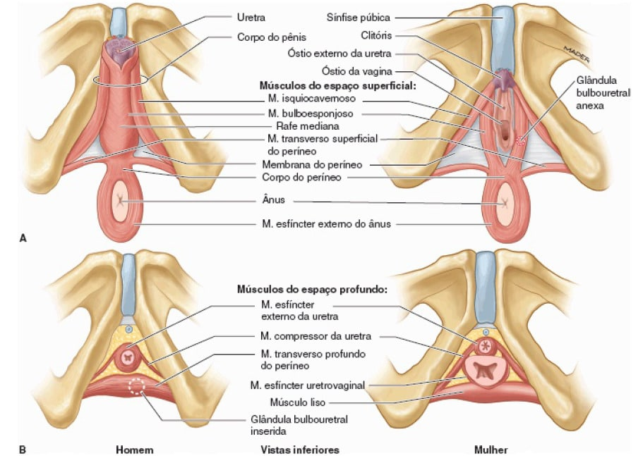
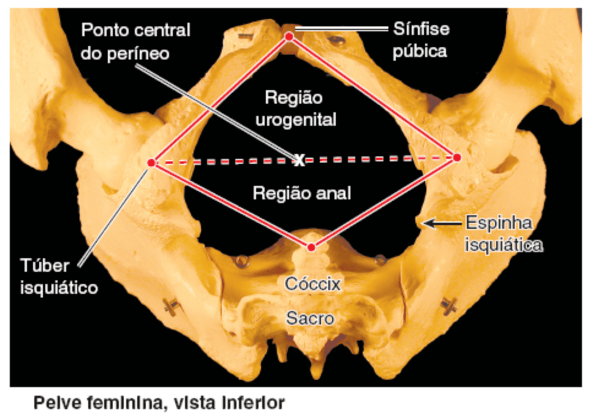
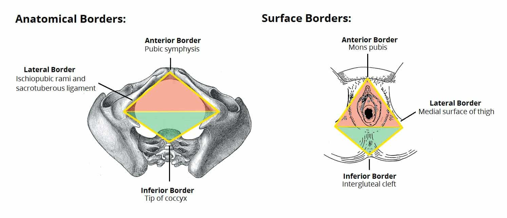
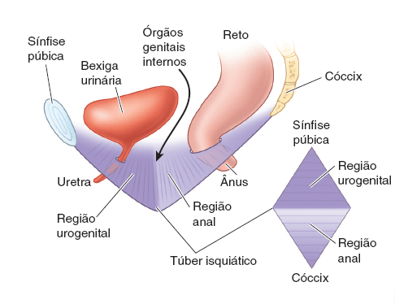
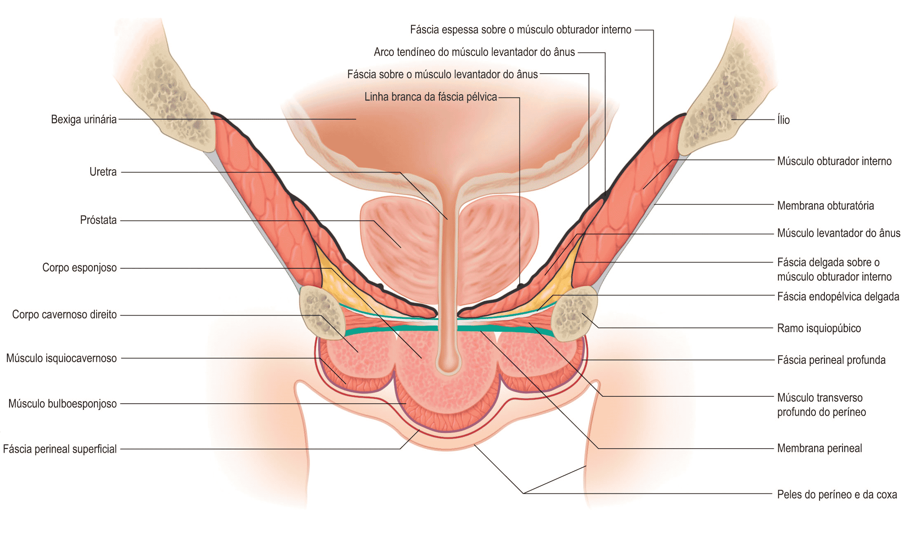
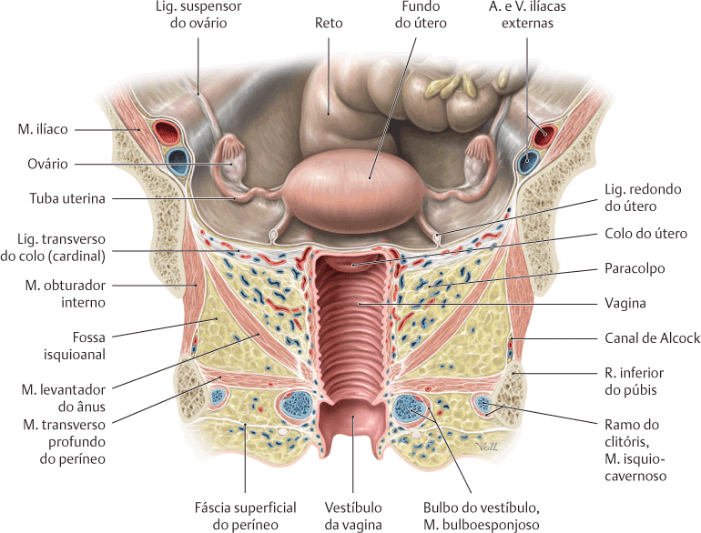
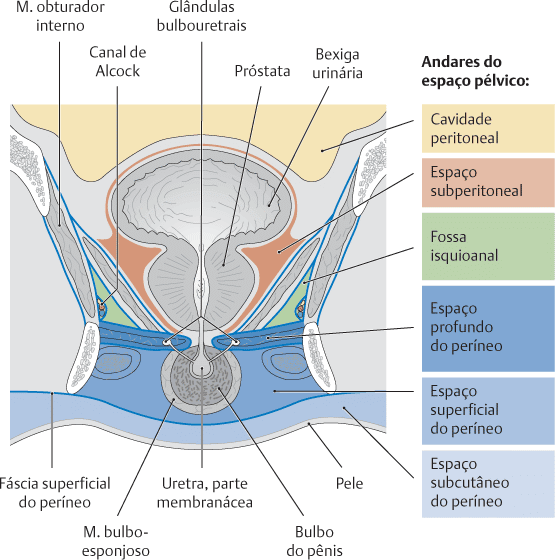
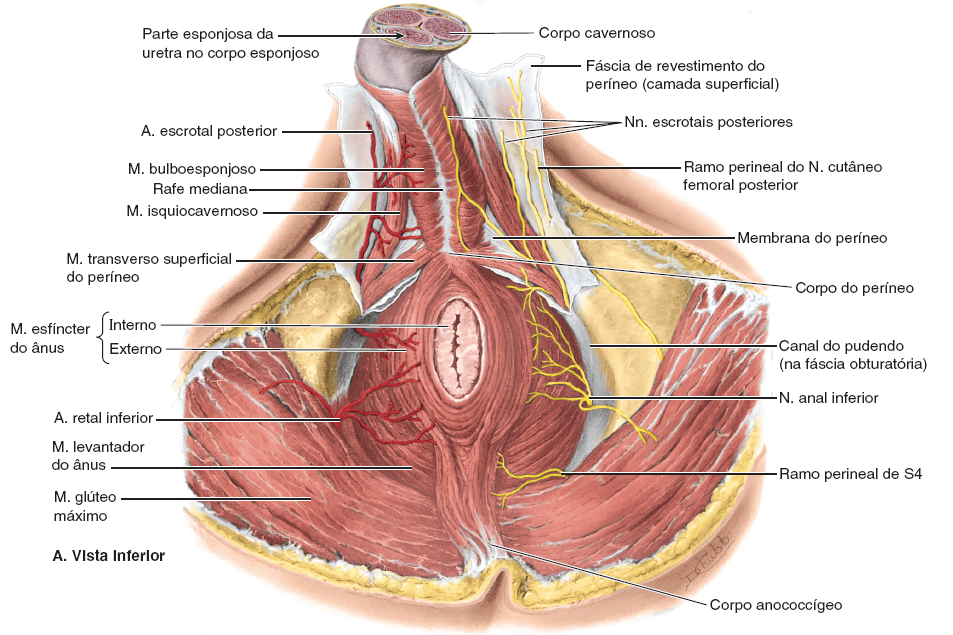

O períneo, cuja etimologia provem do grego peri (= ao redor de) e naion (= ânus),refere-se tanto à área da superfície do tronco entre as coxas e as nádegas, que se estende do cóccix até o púbis, é separado da cavidade pélvica superiormente pelo assoalho pélvico, e inferior ao diafragma da pelve.
O períneo inclui o ânus e os órgãos genitais externos: o pênis e o escroto no homem e o pudendo feminino (a chamada vulva).

MOORE: Keith L. Anatomia orientada para a clínica. 8 ed. Rio de Janeiro: Guanabara Koogan, 2019.
Limites
Na prática clínica, o termo “períneo” é frequentemente usado para descrever a área entre a genitália externa e o ânus.
No entanto, em termos anatômicos, o períneo é uma estrutura em forma de diamante.
Existem duas maneiras principais pelas quais os limites do períneo podem ser descritos:
As bordas anatômicas referem-se às suas margens ósseas exatas, enquanto as bordas superficiais descrevem a anatomia superficial do períneo.
Bordas anatômicas
As bordas anatômicas do períneo são:
Anterior – Sínfise púbica;
Ântero-lateralmente – Ramos isquiopúbicos (ramos inferiores do púbis e ramos do ísquio associados);
Lateralmente – Túberes isquiáticos;
Posterior – Parte inferior do sacro e cóccix;
Póstero-lateralmente – Ligamentos sacrotuberais;
Superior / Teto – Assoalho pélvico;
Inferior / Base – Pele e fáscia.

MOORE: Keith L. Anatomia orientada para a clínica. 8 ed. Rio de Janeiro: Guanabara Koogan, 2019.
Bordas superficiais
Os limites da superfície são melhor mostrados quando os membros inferiores são abduzidos e uma forma de diamante é representada:
Anterior – Monte de púbis nas mulheres e base do pênis nos homens;
Laterais – Superfícies mediais das coxas;
Posterior – Extremidade superior da fenda interglútea.

https://teachmeanatomy.info/
O períneo pode ainda ser subdividido por uma linha imaginária traçada transversalmente entre as tuberosidades isquiáticas.
Esta divisão forma regiões triangulares nomeados como trígono urogenital (anterior) e trígono anal (posterior).
Esses trígonos estão associados a diferentes componentes do períneo.

MOORE: Keith L. Anatomia orientada para a clínica. 8 ed. Rio de Janeiro: Guanabara Koogan, 2019.
Trígono anal
“O trígono anal contém o canal anal e seus esfíncteres, também a fossa isquioanal com seus nervos e vasos contidos.
Ele é revestido pelas fáscias superficial e profunda.
A fáscia perineal superficial é delgada e contínua com a fáscia superficial / subcutânea da pele do períneo, coxas e nádegas.
A fáscia perineal profunda reveste a superfície inferior do músculo levantador do ânus e é contínua em sua origem lateral com a fáscia por sobre o músculo obturador interno, abaixo da inserção do músculo levantador do ânus.
Ela reveste a porção profunda da fossa isquioanal e suas paredes laterais.

Susan L.: Gray’s anatomy, A base anatômica da prática clínica. 40 ed. Rio de Janeiro: Elsevier, 2011.
A fossa isquioanal é uma região de formato aproximadamente de ferradura que preenche a maior parte do trígono anal.
Embora frequentemente referida como um espaço, ela é preenchida com tecido adiposo e tecido conjuntivo frouxo permeado por nervos e vasos sanguíneos.
Os “braços” da ferradura são triangulares em corte transversal porque o músculo levantador do ânus se inclina para baixo, em direção à junção anorretal.

SCHUNKE, M. Prometheus, Anatomia geral e sistema locomotor. 4 ed. Rio de Janeiro, Guanabara Koogan, 2019.
A fossa isquioanal é um importante plano cirúrgico durante ressecções do canal anal e da junção anorretal por causa de tumores malignos.
Ela fornece um plano de dissecção fácil e relativamente sem sangue que inclui todas as estruturas musculares do canal anal e leva à superfície inferior do músculo levantador do ânus, através do qual a dissecção é realizada.
Trígono urogenital
Em homens, o trígono urogenital se estende superficialmente para incluir o escroto e a raiz do pênis.
Em mulheres, ele se estende até o limite inferior dos grandes lábios e do monte pubiano.
O trígono urogenital está dividido em duas partes por uma forte membrana perineal (que envolve o m. transverso profundo do períneo):
O espaço perineal profundo que se localiza acima da membrana, e o espaço perineal superficial localizado abaixo desta.

SCHUNKE, M. Prometheus, Anatomia geral e sistema locomotor. 4 ed. Rio de Janeiro, Guanabara Koogan, 2019.
Espaço profundo do períneo
É delimitada:
Profundamente / superiormente pela fáscia endopélvica (fáscia inferior do diafragma da pelve);
Superficialmente / inferiormente pela membrana perineal;
E lateralmente pela parte inferior da fáscia obturatória (cobrindo o músculo obturador interno).
Em ambos os sexos, o espaço profundo do períneo contém:
Parte da uretra, centralmente;
A parte inferior do músculo esfíncter externo da uretra, acima do centro da membrana do períneo, circundando a uretra;
Extensões anteriores dos corpos adiposos isquioanais.
SCHUNKE, M. Prometheus, Anatomia geral e sistema locomotor. 4 ed. Rio de Janeiro, Guanabara Koogan, 2019.
Nos homens, o espaço profundo do períneo contém:
Parte intermédia da uretra, a parte mais estreita da uretra masculina
Músculos transversos profundos do períneo, imediatamente superiores à membrana do períneo (em sua face superior), seguindo transversalmente ao longo de sua face posterior;
Glândulas bulbouretrais, inseridas na musculatura profunda do períneo;
Estruturas neurovasculares dorsais do pênis.
Nas mulheres, o espaço profundo do períneo contém:
Parte proximal da uretra;
Massa de músculo liso no lugar dos músculos transversos profundos do períneo na margem posterior da membrana do períneo, associada ao corpo do períneo;
Rede neurovascular dorsal do clitóris.
Espaço superficial do períneo
É um espaço virtual localizado profundamente à membrana perineal e está limitada superficialmente pela fáscia perineal profunda (fáscia de revestimento dos músculos perineais superficiais, conhecida como fáscia de Buck ou de Gallaudet).
SCHUNKE, M. Prometheus, Anatomia geral e sistema locomotor. 4 ed. Rio de Janeiro, Guanabara Koogan, 2019.
Nos homens, esse espaço contém:
Raiz do pênis(bulbo e ramos) e músculos associados (isquiocavernoso e bulboesponjoso);
Parte proximal (bulbar) da parte esponjosa da uretra;
Mm. transversos superficiais do períneo;
Ramos perineais profundos dos vasos pudendos internos e nervos pudendos.

MOORE: Keith L. Anatomia orientada para a clínica. 8 ed. Rio de Janeiro: Guanabara Koogan, 2019.
Nas mulheres:
Clitóris e músculo associado (isquiocavernoso);
Bulbos do vestíbulo e músculo adjacente (bulboesponjoso);
Glândulas vestibulares maiores;
Mm. transversos superficiais do períneo;
Vasos e nervos relacionados (ramos perineais profundos dos vasos pudendos internos e nervos pudendos).
Ela é um espaço completamente confinado; injúrias ao conteúdo do espaço (tais como sangramento para dentro da uretra na raiz do pênis) não se comunicam com os espaços profundo ou subcutâneo, a menos que as coberturas fasciais também estejam laceradas ou rompidas.
NETTER: Frank H. Netter Atlas De Anatomia Humana. 8 ed. Rio de Janeiro: Elsevier, 2024.
Espaço subcutâneo do períneo
Este localiza-se entre a fáscia perineal profunda e a fáscia perineal superficial.
Sob circunstâncias normais, essas duas camadas estão separadas apenas por um tecido conjuntivo subcutâneo relativamente delgado, e a pele da região anterior do períneo e dos genitais é relativamente móvel por sobre as estruturas mais profundas.
Entretanto, esta loja é capaz de se expandir consideravelmente na presença de acúmulo de líquido; o sangue, a urina ou algum líquido que se acumula na loja subcutânea por causa de um trauma ou uma cirurgia pode disseminar-se por todos os tecidos do trígono, incluindo a bolsa escrotal ou os lábios maiores.
Mas não pode passar posteriormente para o trígono anal, ou lateralmente para dentro da face medial da coxa, em virtude da firme fixação das inserções posteriores da fáscia subcutânea.
SCHUNKE, M. Prometheus, Anatomia geral e sistema locomotor. 4 ed. Rio de Janeiro, Guanabara Koogan, 2019.
Nos homens, esse espaço contém:
Raiz do pênis(bulbo e ramos) e músculos associados (isquiocavernoso e bulboesponjoso);
Parte proximal (bulbar) da parte esponjosa da uretra;
Mm. transversos superficiais do períneo
Ramos perineais profundos dos vasos pudendos internos e nervos pudendos.
Na mulher:
Clitóris e músculo associado (isquiocavernoso);
Bulbos do vestíbulo e músculo adjacente (bulboesponjoso);
Glândulas vestibulares maiores;
Mm. transversos superficiais do períneo;
Vasos e nervos relacionados (ramos perineais profundos dos vasos pudendos internos e nervos pudendos).
Ela é um espaço completamente confinado; injúrias ao conteúdo do espaço (tais como sangramento para dentro da uretra na raiz do pênis) não se comunicam com os espaços profundo ou subcutâneo, a menos que as coberturas fasciais também estejam laceradas ou rompidas.